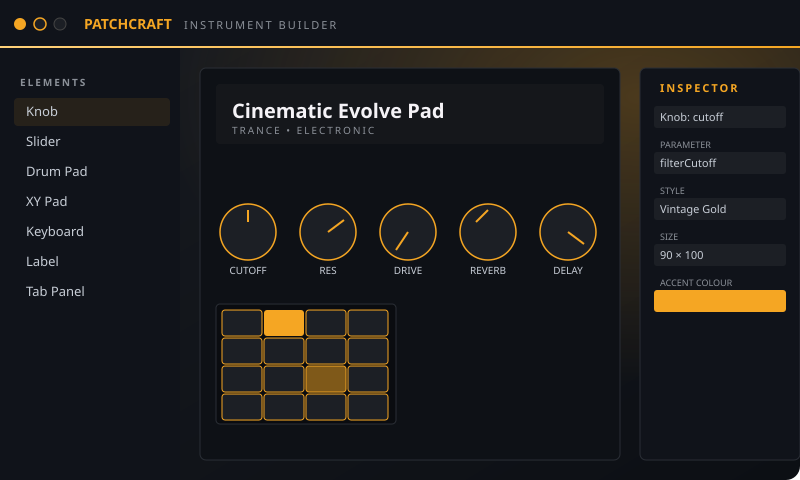

Build a real instrument.
Brand it. Ship it.
PatchCraft is two apps in one: a Studio where you author synth and sampler instruments, and a Player VST3 your customers run inside their DAW. This tutorial walks the whole loop — from blank canvas to a sellable, branded plugin with expansion packs.

What you'll build
By the end of this tutorial you'll have a complete, branded VST3 instrument ready to distribute. We'll cover every workspace in the Studio, every flow, and every step from authoring to packaging.
Visual GUI design
Drag knobs, sliders, drum pads and meters onto a canvas, bind each one to a real DSP parameter.
Sample, synth, drum, FX
Four engines with a shared parameter system. 50 trance / electronic presets ship out of the box.
White-label Player
The Brand Lab lets you replace the Player's name, logo and skin so your instrument carries your identity in every DAW.
Expansion packs
Build a Player once, then sell expansion packs that drop in with new sounds. The library browser shows them as cards.
Sample mapping that doesn't suck
Drag-drop folders. Auto-pad-mapping. Trim with snap-to-zero-crossing. Glitch Kit slices in one click.
MIDI tools, no random
Authored phrases, deterministic operators, chord progressions, real piano roll. Predictable, musical.
The path you'll follow
Pick an engine
Sampler, Synth, Drum Machine or FX. Each loads a starter layout and a default sound.
Shape the sound
Tweak parameters on the Design tab; bring in samples on the Sample Mapper; chain DSP blocks on the DSP Builder.
Design the GUI
Drop knobs, pads, displays on the canvas. Bind every visible control to a parameter.
Brand the Player
Open the Brand Lab. Set display name, tagline, logo, accent colour. The live preview shows what end users see in their DAW.
Bank presets & build expansions
Save patches, organise them into expansion packs that ship as add-ons.
Export & ship
One click writes a
.patchcraftpack folder. Bundle it with the Player VST3 or sell as an expansion.